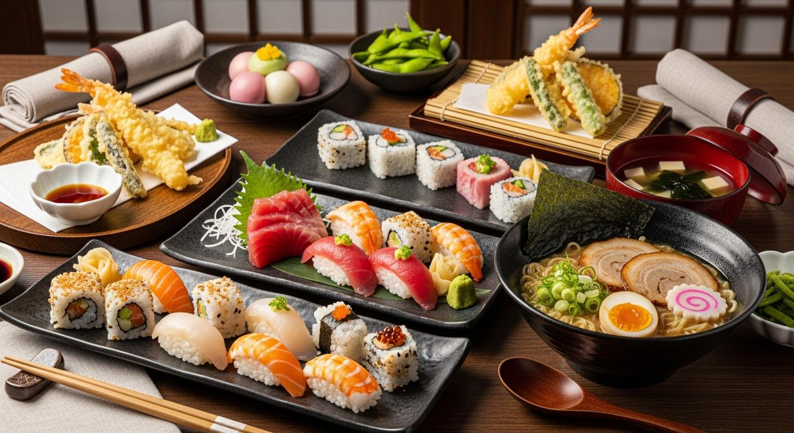

Discover Authentic Japanese Culinary Experiences
Welcome to Japan Dine!
Discover restaurants, get personalised recommendations, and make reservations easily.

About Japan Dine
Target users
- Japanese food lovers
- Couples looking for a dining experience
- Families and friends
- Tourists interested in Japanese cuisine
Our Services
→ Explore RestaurantsBrowse different Japanese restaurants and discover their menus and dining options.
→ Personalised RecommendationsFind restaurants based on your dietary preferences, budget, and dining purpose.
→ Easy ReservationsBook your preferred restaurant and manage your reservation details.
→ Create an AccountCreate your Japan Dine account to access our restaurant services and enjoy a more convenient dining experience.
→ Bill CalculatorEstimate your dining costs, including additional options and service fees.
Why Choose Japan Dine?
- Convenience: Find restaurants and make reservations in one place.
- Variety: Explore different types of Japanese cuisine.
- Personalisation: Get recommendations based on your preferences.
- Transparency: Estimate your dining costs before booking.